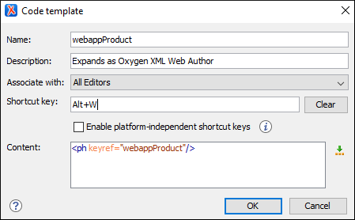

Code Templates
Code templates are code fragments that can be inserted quickly at the current editing position. Oxygen XML Author includes a set of built-in code templates for CSS, LESS, Schematron, XSL, XQuery, JSON, HTML, and XML Schema document types. You can also define your own code templates for any type of file and share them with others.
Code templates are displayed with a  symbol in the content completion list
(Enter in Author mode
or Ctrl + Space (Command + Space on OS
X) in
Text mode). Also, in Text mode you can press
Ctrl
+ Shift + Space to see a complete
list of the available code templates. To enter the code template at the cursor position,
select it from the content completion list or type its code and press
Enter. If a shortcut key has been assigned to
the code template, you can also use the shortcut key to enter it.
symbol in the content completion list
(Enter in Author mode
or Ctrl + Space (Command + Space on OS
X) in
Text mode). Also, in Text mode you can press
Ctrl
+ Shift + Space to see a complete
list of the available code templates. To enter the code template at the cursor position,
select it from the content completion list or type its code and press
Enter. If a shortcut key has been assigned to
the code template, you can also use the shortcut key to enter it.
How to Create Code Templates
- Open the Preferences dialog box and go to .
-
Click New to open a code template configuration dialog box.Tip: You can use one of the existing code templates as a starting point by selecting that template and clicking Duplicate.
Figure 1. Code Template Configuration Dialog Box  - Configure your template using the fields in the code template configuration dialog box:
- Name - The name of the code template.
- Description - [Optional] The description of the code template that will appear in the Code Templates preferences page and in the tooltip message when selecting it from the Content Completion Assistant. HTML markup can be used for better rendering.
- Associate with - You can choose to set the code template to be associated with a specific type of editor or for all editor types.
- Shortcut key - [Optional] If you want to
assign a shortcut key that can be used to insert the code template, place the cursor in
the Shortcut key field and press the desired key combination on
your keyboard. Use the Clear button if you make a mistake. If the
Enable platform-independent shortcut keys checkbox is selected,
the shortcut is platform-independent and the following modifiers are used:
- M1 represents the Command key on MacOS X, and the Ctrl key on other platforms.
- M2 represents the Shift key.
- M3 represents the Option key on MacOS X, and the Alt key on other platforms.
- M4 represents the Ctrl key on MacOS X, and is undefined on other platforms.
- Content - Text box where you define the content
that is used when the code template is inserted. An editor
variable can be inserted in the text box using the
 Insert Editor
Variables button.
Insert Editor
Variables button.
- Click OK to save your new code template.
Result: Your code template can now be selected using the Content Completion
Assistant (Enter in
Author mode or Ctrl + Space (Command + Space on OS
X) in Text
mode). The code templates are displayed with a symbol.